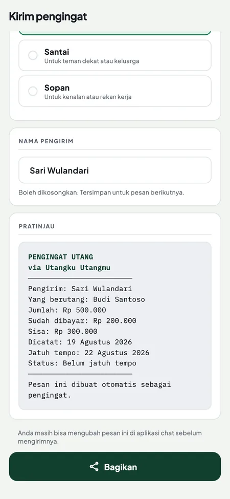
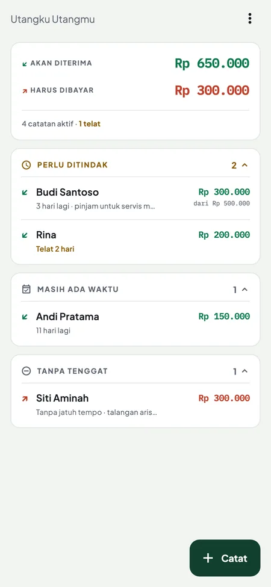
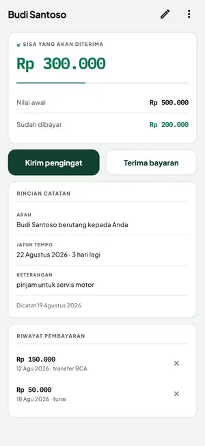
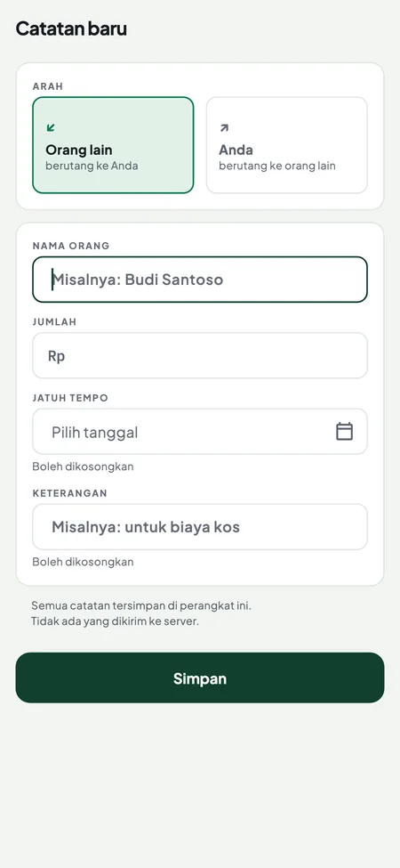
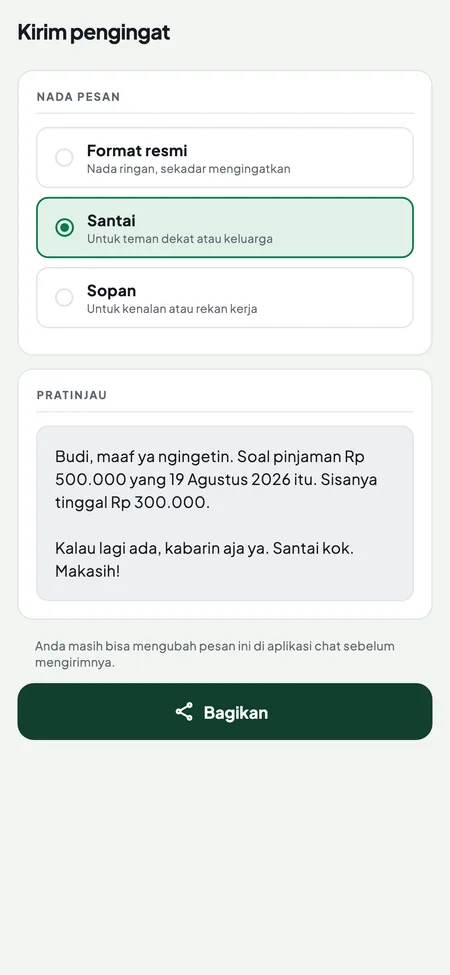
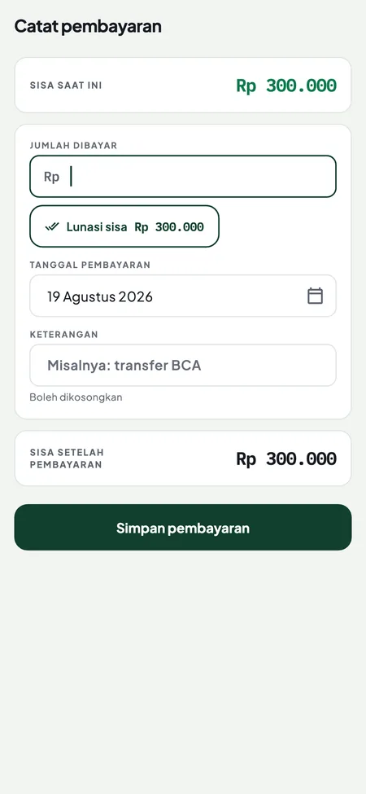

Utangmu
Orang lain berutang ke Anda
Pinjaman ke teman, kasbon rekan kerja, uang yang Anda talangi.
Pesan yang disiapkanPENGINGAT UTANGSisa: Rp 300.000
Catat siapa yang berutang ke Anda, dan ke siapa Anda berutang. Pesannya sudah disusun, tinggal kirim lewat WhatsApp.

Dikirim lewat WhatsApp
PENGINGAT UTANG via Utangku Utangmu ────────────────────── Yang berutang: Budi Santoso Jumlah: Rp 500.000 Sisa: Rp 300.000 Status: Belum jatuh tempo ────────────────────── Pesan ini dibuat otomatis sebagai pengingat.
Banyak pilihan pesanResmi · Santai · Sopan
Utangku dan Utangmu
Dua arah dicatat dengan cara yang sama, dan masing-masing punya pesannya sendiri.
Orang lain berutang ke Anda
Pinjaman ke teman, kasbon rekan kerja, uang yang Anda talangi.
Anda yang berutang
Talangan arisan, pinjaman dari saudara, patungan yang belum diganti.
Fitur
Catatan dikelompokkan menurut waktu:
Dua arah, selalu terpisah:

Catat tiap pembayaran. Sisanya dihitung, lalu catatan pindah ke Lunas.

Notifikasi datang pagi hari saat jatuh tempo, dan sekali lagi bila tanggalnya sudah lewat.
Utangku Utangmu
Contoh: Budi Santoso jatuh tempo hari ini.
Pesan siap kirim
Ada banyak variasi template untuk menagih maupun mengakui utang. Lihat preview-nya, lalu bagikan lewat WhatsApp. Isinya masih bisa Anda ubah sebelum dikirim.
PENGINGAT UTANG via Utangku Utangmu - - - - - - - - - - - - - - - - Pengirim: Sari Wulandari Yang berutang: Budi Santoso Jumlah: Rp 500.000 Sudah dibayar: Rp 200.000 Sisa: Rp 300.000 Jatuh tempo: 22 Agustus 2026 - - - - - - - - - - - - - - - - Pesan ini dibuat otomatis sebagai pengingat.
Santai
Budi, maaf ya ngingetin. Soal pinjaman Rp 500.000 yang 19 Agustus 2026 itu. Sisanya tinggal Rp 300.000. Kalau lagi ada, kabarin aja ya. Santai kok. Makasih!
Sopan
Halo Budi Santoso, apa kabar? Maaf mengganggu, mau mengingatkan soal pinjaman Rp 500.000 tanggal 19 Agustus 2026. Kalau sudah memungkinkan, boleh dikabari ya.
Cara kerja

Langkah 1
Tekan Catat, lalu pilih arahnya: orang lain berutang ke Anda, atau Anda yang berutang. Isi nama dan jumlah. Jatuh tempo dan keterangan boleh dikosongkan.

Langkah 2
Buka catatannya, tekan Kirim pengingat (atau Kirim konfirmasi bila Anda yang berutang). Pilih resmi, santai, atau sopan, lalu lihat preview-nya.

Langkah 3
Tekan Bagikan dan pilih WhatsApp atau aplikasi chat lain. Saat uang masuk, catat cicilannya; sisanya dihitung sampai lunas.
Backup
Semua catatan dan riwayat pembayaran jadi satu file. Anda yang menentukan tempatnya.
MudahCukup tekan Buat file backup.
PraktisGanti HP, tinggal pulihkan.
Tetap di tangan AndaAnda yang pilih tempatnya.
FAQ
Tidak. Pasang, buka, dan langsung catat. Tanpa nomor telepon.
Di HP Anda. Mencatat dan menyiapkan pesan tetap jalan tanpa sinyal.
Buat file backup, simpan di tempat pilihan Anda, lalu pulihkan di HP baru. Catatan yang sudah ada digabungkan, tidak ditimpa.
Tidak. Aplikasi menyiapkan pesannya, Anda yang membaca dan memutuskan kapan mengirim lewat WhatsApp atau aplikasi chat lain.